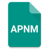

APNM-Framework 
The AppPluginNameManifest framework for use in the JumpGo Desktop browser

Use of the APNM-Framework
The APNM-Framework is designed for use in the JumpGo Desktop Applicaiton. JumpGo for Windows is a .NET application and as such the APNM-Framework is writen in VB.NET but can be migrated to other .NET lanuages.
Developing for APNM
JumpGo web app development is in the APNM-Framework using HTML, XML, CSS, JS and APNM files. To begin, the development api is provided in the JumpGo Developer Edition along with app project samples using Google's Material Design. The framework itself can be found in the release section of this reposictory. For a guide to working on the framework itself, please refer to the How-To.
Creating the Manifest
The manifest file is the fisrt object that the JumpGo browser will call to open the plugin. For instructions of how to create your APNM manifest file, please refer to the Manifest How-To.
Copyright 2015 Josiah Horton
APNM Framework
This Source Code Form is subject to the terms of the
General Open Control License, v. 1.0. If a copy of the GOC
was not distributed with this file, You can obtain one at
https://github.com/JTechMe/GOC-General-Open-Control-Licence-v1.0/